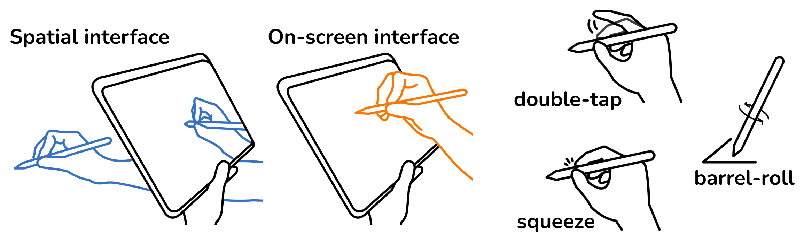
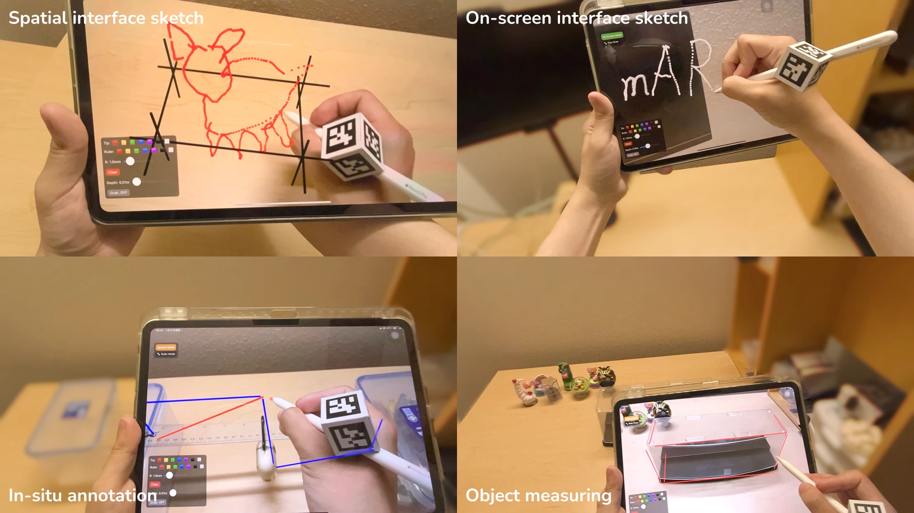

Development
mARker's AR app is built under iPadOS 17.5 and supports two interfaces: a spatial interface for mid-air sketching via stylus tracking, and an on-screen interface for proxy plane sketching, entity transformation, along with auxiliary controls such as color selection.

Interactions

With mARker, user can directly sketch mid-air 3D content, or use traditional way to sketch projected 3D content and manipulate the stroke entities. Practical scenarios are introduced, including in-situ analysis diagram annotation on real object, and dimensioning an object by physically tracing it and evaluating the dimension.
BibTeX Citation
@INPROCEEDINGS{11236371,
author={Pan, Zhaohan},
title={mARker: Hybrid-Interfaced Spatial Sketching via iPad AR, Apple Pencil, and an Instantly Crafted Tracker},
booktitle={2025 IEEE International Symposium on Mixed and Augmented Reality Adjunct (ISMAR-Adjunct)},
year={2025},
doi={10.1109/ISMAR-Adjunct68609.2025.00269}
}